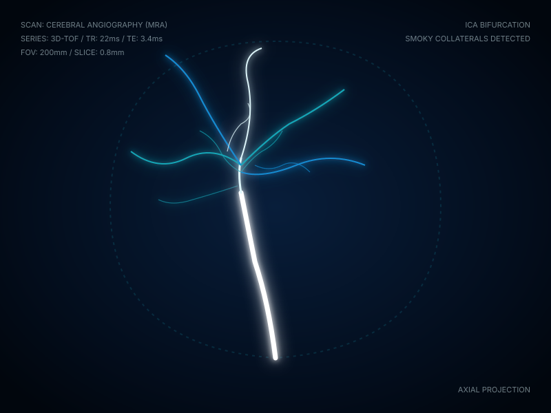
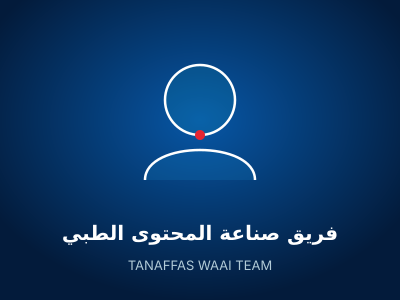
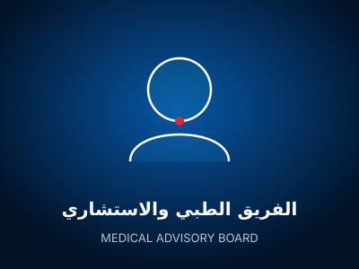
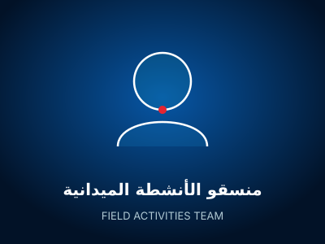
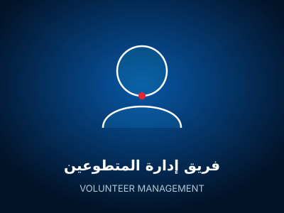
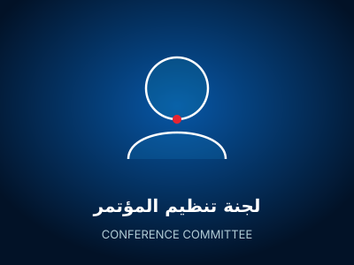

تنفّس وعي
لأن مرضًا نادرًا…
يستحق صوتًا أكبر.
«كم شخص يسمع كلمة Moyamoya لأول مرة بعد أن يُصاب بها شخصٌ يحبه؟»
ما كان هدفنا نشر تعريف جديد للمرض.
«لكن…
كيف يعيش الإنسان مع Moyamoya؟»
Moyamoya لا تبقى داخل المستشفى.
إرشادات وأدلة عملية تصاحب المريض في كل تفاصيل يومه
وهكذا وُلدت سلسلة:
الأشعة ترى الأوعية…

لكنها لا ترى الحياة كلها.
«نحن لا نتحدث عن المرض فقط…
نحن نتحدث عن الإنسان الذي يعيش معه.»
من مبادرة توعوية… إلى منظومة محتوى.
خمسة مسارات متكاملة تبني الفهم خطوة بخطوة
كل خطوة أوصلتنا لليوم.
مسيرة متدرجة بُنيت بالجهد والشغف العلمي والإنساني
الأثر لا يُحكى فقط… يُقاس.
مؤشرات الأثر المجتمعي والتطوعي المعتمدة
خلف كل فكرة… إنسان.
وخلف كل خطوة… فريقٌ يؤمن بأن الوعي يصنع الفرق وينقذ حياة.








ولماذا نجتمع اليوم؟
01 • نجمع المعرفة
توحيد المراجع الطبية وأحدث الأبحاث العالمية تحت مظلة عربية متخصصة.
02 • نقرّب المعلومة
ترجمة المصطلحات المعقدة إلى لغة يفهمها المريض وتطمئن بها أسرته.
03 • نفتح الحوار
خلق مساحة مباشرة بين الكوادر الطبية والمجتمع لتبادل الرؤى والتجارب.
04 • نبني ما بعد المؤتمر
وضع خطة عمل متكاملة للمنصة الرقمية والمكتبة التخصصية القادمة.
لم نصل وحدنا.
شركاء اختاروا أن يكونوا جزءًا من الأثر ودعم التوعية بالأمراض النادرة
17 أكتوبر… ليست نهاية الرحلة.
بل انطلاقة مستدامة لخارطة طريق نوعية لما بعد المؤتمر
رؤيتنا أكبر من حملة.
أن يصبح لدى المريض العربي وأسرته مكان واحد يجدون فيه معلومة موثوقة، لغة يفهمونها، ومحتوى يرى الإنسان قبل المرض.
هذه ليست نهاية الحكاية.
نفهم المرض… ونفهم الحياة معه.
تنفّس وعي | نحن صُنّاع الأمل
شكرًا لأنكم جزء من الرحلة.